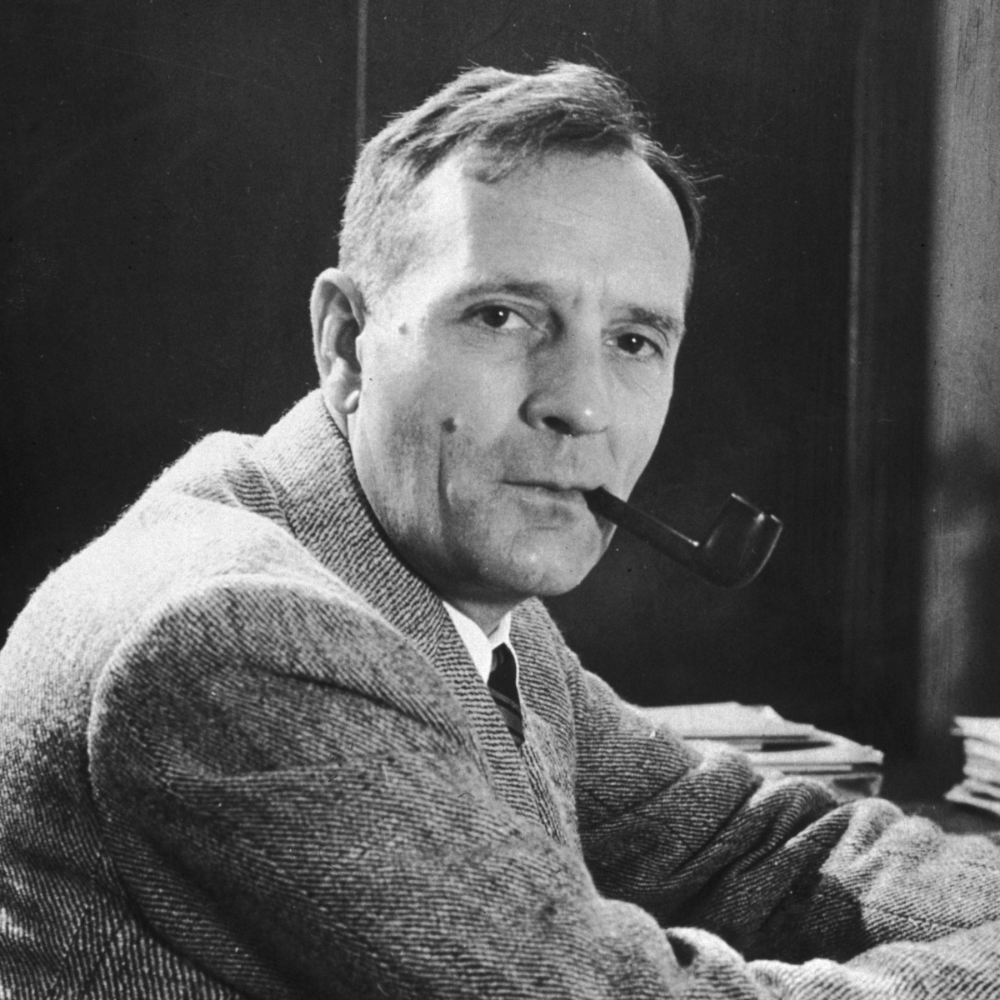

Grandes nomes
1 - Hans Lippershey
Foi um fabricante de lentes dos Países Baixos. Hans nasceu em Wesel, Alemanha. Mudou-se para Middelburg, Países Baixos, casou-se em 1594 e tornou-se cidadão holandês em 1602, permanecendo na mesma cidade até sua morte.

2 - Galileo di Vincenzo Bonaulti de Galilei
Mais conhecido como Galileu Galilei foi um astrônomo, físico e engenheiro florentino, às vezes descrito como polímata. Com frequência é referenciado como "pai da astronomia observacional", "pai da física moderna", "pai do método científico" e "pai da ciência moderna".

3 - Johannes Kepler
Foi um astrônomo, astrólogo e matemático alemão. Considerado figura chave da revolução científica do século XVII, é todavia célebre por ter formulado as três leis fundamentais da mecânica celeste, denominadas Leis de Kepler, tendo estas sido codificadas por astrônomos posteriores com base nas suas obras Astronomia Nova, Harmonices Mundi e Epítome da Astronomia de Copérnico. Essas obras também forneceram uma das bases para a teoria da gravitação universal de Isaac Newton.

4 - Edwin Powell Hubble
Foi um astrônomo norte-americano que teve um papel crucial no estabelecimento dos campos da astronomia extragaláctica e na cosmologia observacional. Hubble provou que muitos objetos que, anteriormente, acreditava-se que fossem nuvens de poeira e gás, classificadas como "nebulosas", eram na verdade galáxias além da Via Láctea. Ele também usou a forte evidência direta entre a luminosidade e o período de pulsação de uma cefeida variável clássica (descoberta em 1908 por Henrietta Swan Leavitt) para dimensionar distâncias galácticas e extragalácticas.
5 - Hermann Oberth
Foi um cientista alemão que, junto com o russo Konstantin Tsiolkovsky e o estadunidense Robert Goddard, foi um dos precursores da moderna astronáutica. Seu interesse por exploração espacial surgiu desde cedo quando ele leu o livro "Da terra à Lua" de Júlio Verne. Oberth foi o primeiro a idealizar foguetes com múltiplos estágios e a imaginar estações espaciais.

6 - Lyman Spitzer
Foi um físico estadunidense. Considerado um dos maiores cientistas do século XX, fez grandes contribuições no campo da dinâmica estelar, da fusão termonuclear, do plasma e da astronomia em geral

7 - James Edwin Webb
Foi um militar, servidor público e político dos Estados Unidos. Foi o segundo Administrador da NASA, entre 14 de fevereiro de 1961 a 7 de outubro de 1968. James supervisionou a NASA no início da administração de John F. Kennedy e depois na de Lyndon B. Johnson, além de todos os primeiros voos tripulados do Projeto Mercury, Gemini e o incêndio da Apollo.